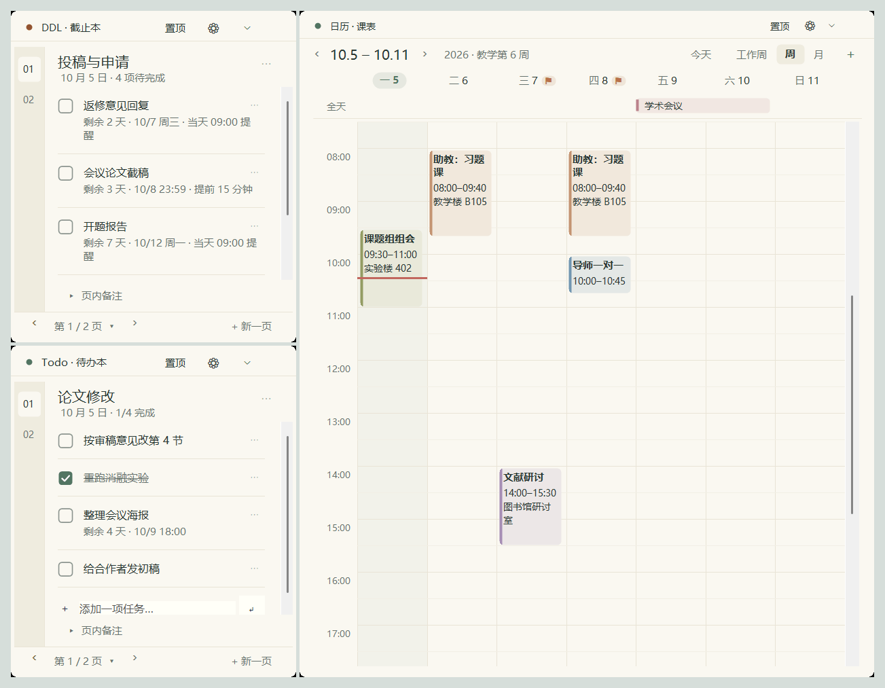
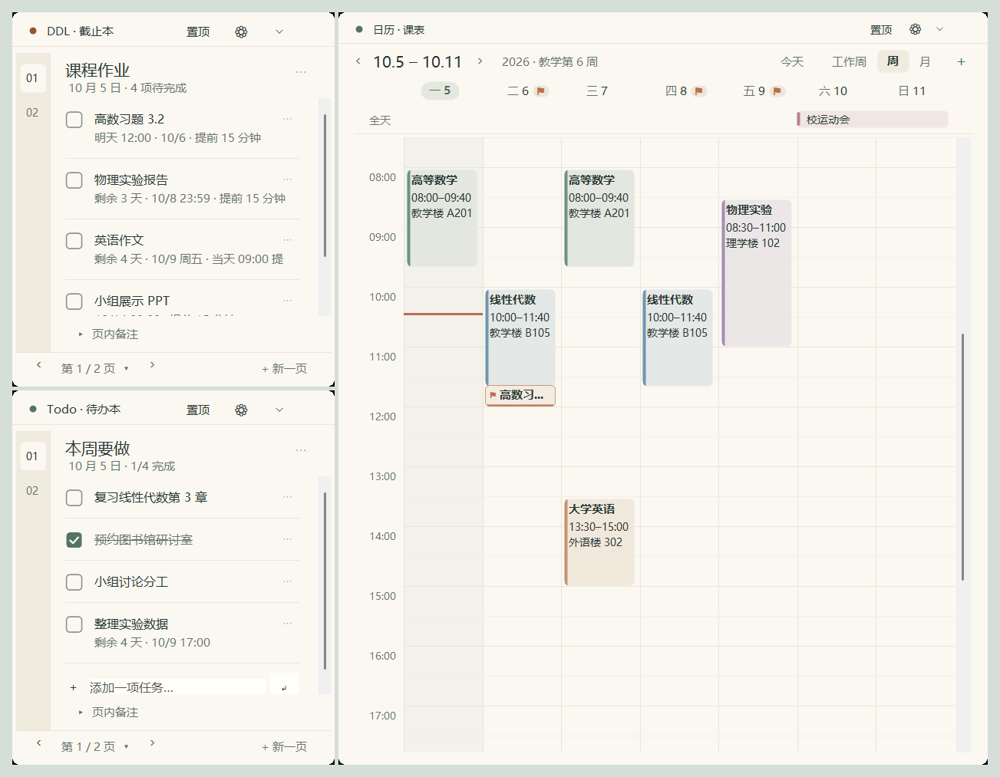
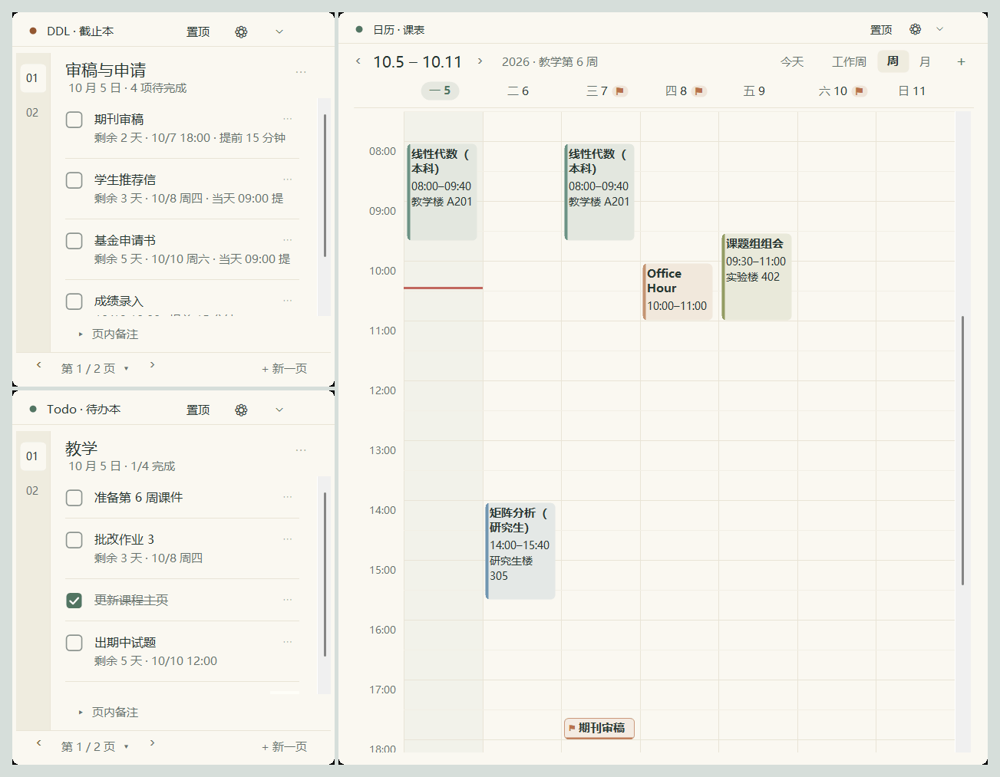
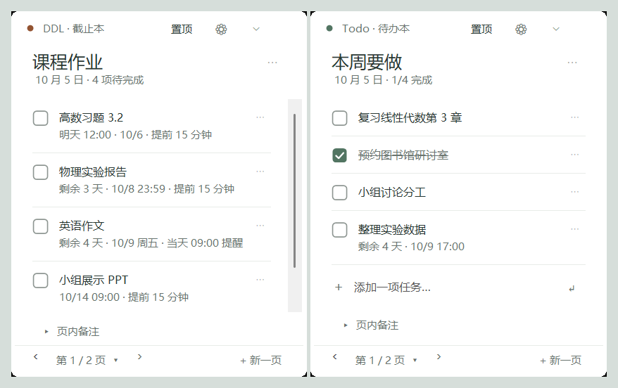

DDL 不该靠记性。
课表、待办和截止日期，一直在桌面上。
桌面课笺把一周的课表、手头的待办和每一个截止时间，做成三个常驻桌面的小组件。不用打开任何应用，抬头就能看到；DDL 按截止时间排好、标在日历上，快到期时会提醒你。
- 开源 · MIT
- 无账号
- 默认不联网
- 无广告
- 中文 · English
- 约 630 KB
- 解压即用，无需安装

记下来不难，难的是之后还看得到
一学期里真正误事的，往往是那几件「我以为还有几天」的事。
截止时间散落在各处
课程平台、邮件、群通知、会议官网。每个 DDL 在不同的地方，全靠脑子汇总。
待办应用要打开才看得到
写进去的时候很认真，之后就再没打开过。看不到的清单，等于没有清单。
课表和临时变动对不上
双周的组会、单次的调课、某一周的停课、放假几天，普通的周课表表达不了。
同一个工具，三种学期节奏
下面是程序的实际界面，内容为示例数据。点击切换角色。

课表录一次，作业不再漏交
- 学期初录一次课表整个学期自动排好，并显示当前是教学第几周。
- 作业、实验报告进 DDL直接看到「明天截止」「剩余 3 天」，最急的总在最上面。
- 调课、停课只改那一次其他周的课表不受影响。
- 双击就能改任务写错了直接双击修改，回车保存。
组会、论文和助教工作放在一起看
- 双周组会设成「每两周」不用每次手动建。某次改期，只改那一次。
- 截稿、返修、开题进 DDL按截止时间自动排序，每项单独设提前量，日历上也能看到。
- 会议、出差用全天日程跨几天就是一条横条，放在日历最上面一行。
- 学校日历同步进来Outlook 里的讲座、答疑可以只读同步，按日程名称配色。

授课、指导和各种截止，一屏看全
- 本科课、研究生课、Office Hour、组会都在同一张周视图里，双周的例会也能正确显示。
- 审稿、基金申请、成绩录入集中提醒重要的事可以提前一天提醒，而不是到点才响。
- 考试周、假期一目了然全天日程横跨对应的几天。
- 设置免打扰时段时段内的提醒会推迟，结束后汇总给你。
为学期和科研的节奏设计
这些不是花哨的功能，是用一段时间之后才会发现少不了的东西。
每周与每两周
一门课可以勾选一周里的多天。双周组会、单双周课程都能表达。
只改这一次
调课、停课保存为单次例外，其他周保持原样。
假期和考试周
全天日程可以跨多天，显示在星期行下面，也能每周重复。
按截止时间排序
最急的在最上面，完成的沉到底；新加的会自己排到该在的位置。
DDL 标在日历上
有时间的 DDL 是一个 ⚑ 小标签，有 DDL 的日子旁边有角标；单击跳到那条任务。
同步学校日历
粘贴 Outlook 发布的日历链接，只读显示；也可以一次性复制成自己的课程。
提前量逐项设置
每个任务单独设提前多久提醒，提前和截止时各提醒一次；错过的会补发。
双击就改
双击任务文字原地修改，点别处自动保存；打字回车就是一条新任务。
在，但不打扰
平时待在其他窗口下面；单击任务栏按钮或按快捷键，组件浮到前面。
暂时收起来
组件可以折叠成一条顶栏，停在屏幕底部，需要时再展开。
现在是第几周
填好学期起止日期，日历上直接显示当前教学周。
中文和 English
界面可在中文和英文之间切换，第一次打开时跟随 Windows 语言。
五种便签外观，点一下就换
日历会跟着换风格，切换不会丢任何内容。主题、背景色、透明度和字号也都可以调。

白底，大标题，任务之间只有细线，最简洁。
可以放心装在工作电脑上的理由
未发表的课题、学生的成绩、审稿任务，这些不该出现在别人的服务器上。
和你现在的办法比一比
| 桌面课笺 | 纸质便利贴 | 手机或网页上的待办、日历应用 | |
|---|---|---|---|
| 不用打开就能看到 | 常驻桌面 | 贴在屏幕边 | 需要主动打开 |
| 到期提醒 | 提前与到期各一次 | 没有 | 有 |
| 循环课表与单次调课 | 每周、每两周、单次例外 | 没有 | 视应用而定 |
| Outlook 日历 | 可只读同步，或复制成自己的课程 | 没有 | 视应用而定 |
| 账号 | 不需要 | 不需要 | 多数需要 |
| 数据存放位置 | 只在本机 | 在你桌上 | 多数在云端 |
| 多设备同步 | 不支持 | 不支持 | 多数支持 |
第三列是对这类应用的一般性描述，具体以各应用为准。
它不适合这些情况
先说清楚，省得你下载之后才发现。
- 只支持 Windows 10 和 11。没有 macOS、Linux 和手机版本。
- 不在多台设备间同步。换电脑时可以导出一个文件再导入。
- Outlook 只能只读同步。不能在这里改 Outlook 的日程，也不支持 Google 日历等；Outlook 发布的链接不带颜色，需要按日程名称自己设。
- 不支持多人协作。它是个人用的工具。
- 没有数字签名。首次运行时 Windows 会弹出安全提示，需要手动确认。
- 提醒需要程序在运行。建议打开「登录 Windows 后自动启动」。
- 按 Win+D 显示桌面时，组件可能一起被收起。单击任务栏按钮或按快捷键就能叫回来。
解压，双击，开始用
不用安装，不需要管理员权限。
下载并解压
下载压缩包，解压到一个固定的文件夹，比如 D:\桌面课笺。
双击 DeskStudy.exe
第一次打开是空白课表和两本空便签，直接开始用。
录入课表和任务
双击日历空白处添加课程，在便签底部打字回车添加任务；学校日历可以从 Outlook 同步进来。
首次运行如果出现「Windows 已保护你的电脑」，点「更多信息」→「仍要运行」。出现这个提示是因为程序没有购买数字签名。压缩包里的「使用指南.html」和「User Guide.html」有完整的图文说明。
你可能想问
要钱吗？有没有广告或内购？
都没有。桌面课笺免费，以 MIT 许可证开源。
会不会上传我的数据？
不会。你的课程、任务和设置只保存在本机。只有订阅了 Outlook 日历时，程序才会访问你填写的那一个链接，而且只下载、不上传。源码公开，可以自己核实。
能和 Outlook 日历一起用吗？
可以。在 Outlook 网页版「发布日历」得到一个 ICS 链接，粘贴到设置中心，就会只读显示在日历上，并按设定的间隔自动更新。也可以一键把它复制成自己的课程，之后不再同步。
有英文界面吗？
有。设置中心「外观」最上面可以在中文和 English 之间切换，重启后生效。第一次打开时会跟随 Windows 的显示语言。
点了组件的 ✕，程序就关了吗？
没有，只是把组件隐藏了，提醒照常。双击托盘图标可以全部显示出来；要彻底退出，右键托盘图标选「保存并退出」。
任务栏上怎么找到它？
三个组件各自不占任务栏，但程序有一个「桌面课笺」任务栏按钮：单击把组件叫到前面，再单击收回去。右键它可以固定到任务栏。也可以在设置里切换成带标题栏的标准窗口。
为什么没有收到提醒？
提醒需要程序在运行，任务要设置了截止时间并且没有打勾。再检查一下 Windows 的通知设置和勿扰模式。
换电脑或重装系统怎么办？
在设置中心导出全部数据，得到一个文件，拷到新电脑后导入即可。
卸载会留下什么？
程序本身只有解压出来的那个文件夹，删掉即可。你的数据保存在本机用户目录下的 DeskStudy 文件夹里，不需要时可以一并删除。如果开启过「登录 Windows 后自动启动」，删除前先在设置中心把它关掉。
这学期的 DDL，别再靠记性
免费、开源、无账号。下载解压，双击就能用。